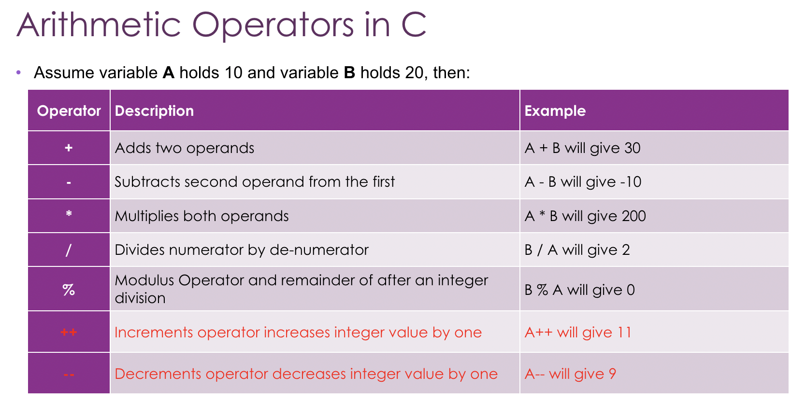

先來說說++吧
++分為先++與後++，例如:a++,++a
假設a = 5，b = a++
b會等於5。
假設a = 5，b = ++a
b會等於6。
--也是同一個道理，這裡就不多做敘述。
練習一下：
#include <stdio.h>
int main(void)
{
int a = 31;
int b = 20;
int c ;
c = a % b; // get the remainder
printf("a: %d; b: %d; c: %d\n", a, b, c);
c=a++;
printf("a: %d; b: %d; c: %d\n", a, b, c);
c=--b;
printf("a: %d; b: %d; c: %d\n", a, b, c);
return 0;
}
請問會輸出什麼呢？（如果有辦法跑一次的話最好喔！！！）
ans: